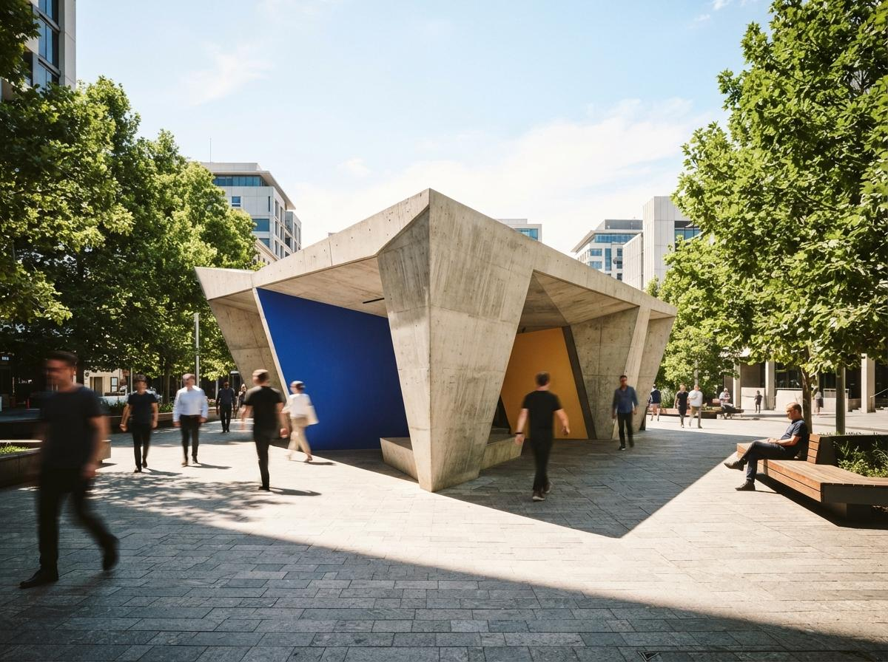
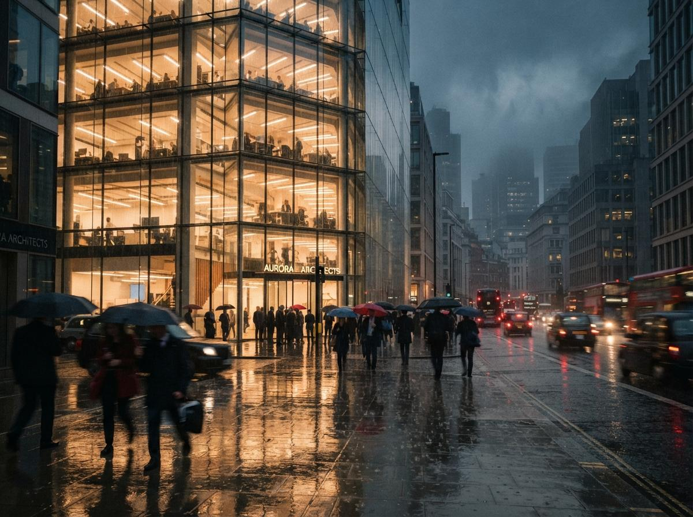

Gendo has been circling our review queue for a while. It comes out of London, it was developed early on with input from large practices (Zaha Hadid Architects was the marquee name in its launch coverage), and it keeps appearing in the middle rows of the tool lists we audit. What pushed it to the top of the queue this week was not the product. It was the blog post: "Top 10 AI Rendering Software for Architects in 2026," published by Gendo, in which the best overall AI rendering software for architects in 2026 turns out to be, in a twist nobody saw coming, Gendo.
Easy joke, and we just made it. But vendor listicles are now a fixture of this category, and they reward closer reading than the eye-roll. So this is two pieces in one: what Gendo actually is, and what its own top ten accidentally tells you about it.
What Gendo actually is
Gendo is a browser tool. No plugin, no install, no GPU in the corner heating the office. You bring it a sketch, a massing screenshot, a white-card viewport export, or just a text description, and it generates architectural visuals you can steer with style controls and edit by region. Output lands on a canvas, a persistent board where variations sit next to each other, rather than in a one-image-at-a-time export queue.
Its own list describes it as "the collaborative AI design canvas for architects," and for once the positioning phrase is doing real work. The canvas is the product. Everything else it does (sketch to render, style transfer, region edits) exists elsewhere, and often in more places at once. What the plugin renderers do not have is a shared surface where a design team develops a set of options together and the history of that exploration stays visible.
Collaborative AI visualization canvas for concept-stage work. Sketch, screenshot, or text in; steerable visual options out, arranged on shared boards. Developed with input from large practices. The collaboration layer is the differentiator to verify; render quality claims are table stakes in 2026.

The canvas is the actual idea
Step back and the category has settled into camps. The integration war is over and Veras won it: Chaos's own comparison this week points out that Veras is the only AI renderer living directly inside seven BIM and CAD platforms, and our platform-by-platform survey says roughly the same. If your question is "how do I get an AI render of the model I already have, without leaving the model," that question has answers, and they are plugins.
Gendo is betting on a different moment in the project. Concept design does not happen inside one person's Revit session. It happens in conversations, with a principal and two designers arguing over six options pinned side by side. The traditional medium for that argument was the foam model and the print wall. The AI-era version, if anyone builds it properly, is exactly what Gendo is describing: a board where options multiply, get marked up, and keep their lineage, with more than one pair of hands on the tools.
That is a real gap. We said in our concept-stage piece that early design is where AI rendering earns its keep, because a hallucinated tree costs nothing when the building itself is still a hypothesis. The plugin renderers serve that phase awkwardly, because they assume a model exists and that one person is driving. A tool built for the option-generating conversation, before the model deserves to exist, is a different product, not a worse one.
The ranking tells you what Gendo wants. The category labels tell you what it is.

How to read a vendor's top ten
Now the list itself. Gendo's top ten puts Gendo first as best overall, Veras second as best for BIM-integrated AI rendering, and D5 Render third. And here is the thing: apart from the self-coronation, the list is pretty honest. It hands Veras the BIM crown without hedging. It describes D5 accurately as a real-time renderer with AI features rather than pretending it is a direct rival.
This is a pattern we have noticed across vendor-written comparisons, and it has a simple mechanism. A vendor list can inflate its own entry freely, but it describes named competitors carefully, because a competitor with a legal team and a louder blog can answer a false description in public. The result is that vendor lists are often more accurate about everyone except the vendor. Chaos ran the same play this week with a six-tool comparison on its own blog, and Veras, you will be startled to learn, came out looking excellent. Same genre, same rules.
So read these lists the way you would read a resume: skip the adjectives, look for the admissions. The most informative line in Gendo's entire top ten is the second one. By awarding Veras "best BIM-integrated," Gendo is telling you, in its own words, that it has no BIM story and knows it. That single concession locates the product more precisely than any of the praise: Gendo lives before the model, not inside it. If your pipeline starts and ends in Revit, their own list just told you to buy something else.
Who should bother
On paper, Gendo fits the people the plugin ecosystem quietly ignores: small studios without a Revit-anchored pipeline, interiors teams, competition teams cranking options, students, and any practice where concept imagery is a group activity rather than a specialist's job. It is also, notably, a Mac-friendly answer in a category that keeps assuming an RTX card, a point we made in the Mac piece.
It is not a fit if you need tight geometry adherence from a developed model, the thing we measured in our adherence-controls comparison. Nothing in Gendo's public material claims otherwise, which, again, is to its credit.
A full ArchiGen review means testing, and the test list for this one writes itself:
- Is the collaboration real? Multiple users on one board, live, with history and comments, or a shared folder wearing a canvas costume. This is the whole bet, so it gets tested first.
- Set consistency. Six views of one scheme that read as one building, the failure mode we documented in the consistency piece. Canvas tools live or die here, because options that drift are options you cannot compare.
- The credit math at team scale. Per-seat plus per-generation pricing gets expensive exactly when the tool is working, in a five-person option sprint.
- Export ceilings. Concept boards end up on client screens, and resolution limits surface at the worst possible moment.
Our take
The self-ranking is noise, and mildly embarrassing noise. The product idea underneath is not. Most of what has shipped in AI rendering since 2024 is the same picture generator wearing different toolbars, a convergence we wrote up in the convergence piece. A tool that instead targets the messy, multiplayer, pre-model stretch of a project is at least aiming at an unsolved problem. Whether it hits is what a full review is for, and Gendo just volunteered itself for one.
Best overall is a category you can award yourself. A working shared canvas is a thing you either shipped or you did not. We intend to find out which kind of number one this is.
Drawn from this week's intel sweep, where Gendo's "Top 10 AI Rendering Software for Architects in 2026" and Chaos's six-tool comparison both surfaced in competitor content. First look based on public materials and vendor documentation, not hands-on testing; a full tested review is queued. No affiliate relationship with any tool named.